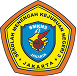

Unggul, Kreatif, Berkarakter
Informasi umum dan identitas SMKN 3 Jakarta
Perjalanan & perkembangan SMKN 3 Jakarta
Jadwal kegiatan akademik dan sekolah.
Informasi guru dan tenaga kependidikan.
Unit pengelola pendukung layanan sekolah.